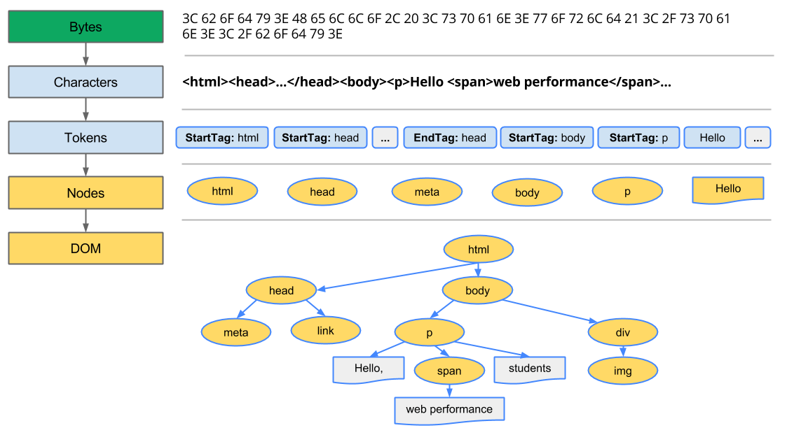

Use Google PageSpeed Insights to get a overview for your Site Performance Click here.
Go to device settings and click on about device
To unlock the developer Options click on build-number 7 times
Go to developer Options and and activate usb debugging.
Connect your mobile to your development-machine
Open the Site you want to debug on your Mobile
Open Chrome on your development-machine and enter chrome://inspect
For setting up an similar Toolchain for iPhones use IOS-debug-proxy for more Informations Check this.
Describe the Steps the Browser goes through to translate html, css and Javascript into actual pixel on the Screen. Find out more here.

By optimizing the critical rendering path we can significantly improve the time to first render of our pages. Further, understanding the critical rendering path will also serve as a foundation for building well performing interactive applications. It turns out, the process for processing interactive updates is the same, just done in a continuous loop and ideally at 60 frames per second! However, let’s not get ahead of ourselves just yet. First, let’s take a quick, ground-up overview of how the browser goes about displaying a simple page.
Konvertierung: Der Browser liest die Rohbytes des HTML-Codes von der Festplatte oder aus dem Netzwerk ein und übersetzt diese basierend auf der angegebenen Dateicodierung, z. B. UTF-8, in einzelne Zeichen. Tokenisierung: Der Browser konvertiert Zeichenfolgen in eindeutige Token, die vom W3C HTML5-Standard vorgegeben sind, z. B. ,
und andere Strings in spitzen Klammern. Jedes Token hat eine spezielle Bedeutung und mehrere Regeln. Lexing: Die ausgegebenen Token werden in Objekte umgewandelt, die ihre Eigenschaften und Regeln festlegen. DOM-Erstellung: Weil das HTML-Markup Beziehungen zwischen unterschiedlichen Tags definiert (manche Tags sind in anderen Tags enthalten), werden die erstellten Objekte in einer Baumstruktur verknüpft, die die hierarchischen Beziehungen berücksichtigt, die im ursprünglichen Markup vorgegeben sind: HTML object ist body object übergeordnet, body ist paragraph object übergeordnet und so weiter. Konvertierung: Der Browser liest die Rohbytes des HTML-Codes von der Festplatte oder aus dem Netzwerk ein und übersetzt diese basierend auf der angegebenen Dateicodierung, z. B. UTF-8, in einzelne Zeichen. Tokenisierung: Der Browser konvertiert Zeichenfolgen in eindeutige Token, die vom W3C HTML5-Standard vorgegeben sind, z. B. ,
und andere Strings in spitzen Klammern. Jedes Token hat eine spezielle Bedeutung und mehrere Regeln. Lexing: Die ausgegebenen Token werden in Objekte umgewandelt, die ihre Eigenschaften und Regeln festlegen. DOM-Erstellung: Weil das HTML-Markup Beziehungen zwischen unterschiedlichen Tags definiert (manche Tags sind in anderen Tags enthalten), werden die erstellten Objekte in einer Baumstruktur verknüpft, die die hierarchischen Beziehungen berücksichtigt, die im ursprünglichen Markup vorgegeben sind: HTML object ist body object übergeordnet, body ist paragraph object übergeordnet und so weiter.Tokenisierung: Der Browser konvertiert Zeichenfolgen in eindeutige Token, die vom W3C HTML5-Standard vorgegeben sind, z. B. ,
und andere Strings in spitzen Klammern. Jedes Token hat eine spezielle Bedeutung und mehrere Regeln.Lexing: Die ausgegebenen Token werden in Objekte umgewandelt, die ihre Eigenschaften und Regeln festlegen.
DOM-Erstellung:Weil das HTML-Markup Beziehungen zwischen unterschiedlichen Tags definiert (manche Tags sind in anderen Tags enthalten), werden die erstellten Objekte in einer Baumstruktur verknüpft, die die hierarchischen Beziehungen berücksichtigt, die im ursprünglichen Markup vorgegeben sind: HTML object ist body object übergeordnet, body ist paragraph object übergeordnet und so weiter.
Wenn Sie Chrome DevTools öffnen und eine Zeitleiste aufzeichnen, während eine Seite geladen wird, können Sie die Zeit sehen, die für die Durchführung dieses Schritts benötigt wird. Im obigen Beispiel dauerte es circa 5 ms, um eine Anzahl von HTML-Bytes in eine DOM-Baumstruktur umzuwandeln.
Wie bei HTML müssen die empfangenen CSS-Regeln in ein Format umgewandelt werden, das im Browser verarbeitet werden kann. Der Prozess ähnelt sehr der Vorgehensweise bei HTML:

Die CSS-Bytes werden in Zeichen konvertiert, dann in Token und Knoten und schließlich in einer Baumstruktur verknüpft, die als CSS Object Model oder abgekürzt CSSOM bezeichnet wird:

Warum besitzt das CSSOM eine Baumstruktur? Bei der Berechnung der finalen Styles für die einzelnen Objekte auf der Seite beginnt der Browser mit der allgemeinsten Regel, die auf diesen Knoten anzuwenden ist, z. B. gelten für das untergeordnete Element eines body-Elements alle body-Styles. Anschließend werden die berechneten Styles rekursiv verfeinert, indem spezifischere Regeln angewendet werden, d. h., die Regeln werden nachrangig abgearbeitet.
Beachten Sie auch, dass die obige CSSOM-Baumstruktur nicht vollständig ist und nur die Styles aufweist, die wir in unserem Stylesheet überschreiben wollten. Jeder Browser stellt eine Reihe von Standard-Styles bereit, die als User Agent Styles bezeichnet und dargestellt werden, wenn wir keine eigenen vorgeben. Mit unseren Styles werden diese Standard-Styles, z. B. Standard-IE-Styles überschrieben. Wenn Sie sich jemals die computed Styles in Chrome DevTools angesehen und sich gewundert haben, wo all diese Styles herkommen, wissen Sie jetzt Bescheid!
Sind Sie neugierig, wie lange die CSS-Verarbeitung gedauert hat? Zeichnen Sie eine Zeitleiste in DevTools auf und suchen Sie das Ereignis Recalculate Style (Style neu berechnen): Im Gegensatz zum DOM-Parsing enthält die Zeitleiste keinen Eintrag Parse CSS (CSS parsen) und erfasst stattdessen das Parsing und die Erstellung der CSSOM-Baumstruktur sowie die rekursive Berechnung der computed (berechneten) Styles im Rahmen dieses einen Ereignisses.
If you enter an search query on google the result is split in mulitply parts. Even before the search query is parsed form the google backend the server sends an partical response with the Site-header which one is identical for all users.